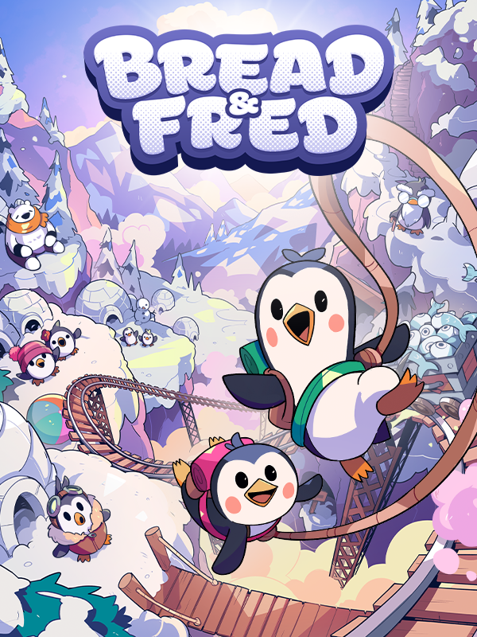

Bread & Fred
Bread & Fred
Details
|  | |
| Playtime | Not Played |
| Last Activity | Never |
| Added | 2024-06-04 0:45:16 |
| Modified | 2024-06-04 0:45:30 |
| Completion Status | Not Played |
| Library | Steam |
| Source | Steam |
| Platform | PC (Windows) |
| Release Date | 2023-05-23 |
| Community Score | |
| Critic Score | |
| User Score | |
| Genre | Indie Platform |
| Developer | SandCastles Studio |
| Publisher | Apogee Entertainment SandCastles Studio |
| Feature | Co-Operative Multiplayer Single Player |
| Links | Steam Official YouTube Twitch GOG |
| Tag | |
Description
Bread & Fred is a challenging co-op platformer from Apogee where two players must cooperate to jump and climb to the top of a snowy mountain. Play as both Bread and Fred in their exasperating and sometimes maddening climb that requires precision with every jump. Each time you land you’ll be closer to the peak and one step closer to mastering the platforming, but your fall down the mountain will be even farther.

- Swing to reach distant platforms!
Bread and Fred are attached to each other. That means you don’t only fall together, but you can make good use of momentum to swing and propel each other beyond what any single penguin could have ever jumped. Make sure one of you anchors down to the ground or you’ll both fall!
- Hold on to walls as long as you can!
The penguins’ little hands aren't very good, but you can hang on a wall with your partner for a few seconds to swing them around and overcome the next obstacle. Be careful though. These penguins are chubby so you can’t hold on long. Act fast!
- Single-player mode!
Can’t find your penguin buddy? Strap your rope to Jeff (a rock!) and use it instead! The climb will all be up to you and your skill, but that also means you have no one to blame when you fall...
Legends say that with these skills, a few penguin heroes have managed to reach the top. Will you be one of them?


Each fall will hurt, but try to learn and laugh through it. Think carefully about each jump and master the penguin skills to reach the summit.
For the craziest climbers, Bread & Fred includes a speedrun mode so you can compete and be crowned the best penguins on the planet.
The mountain awaits you. Complete your mission. Cooperate with each other and you will be able to go far up the mountain. Just try not to fall (too much). Good luck!!
Penguin Mechanics:
- Swing to reach distant platforms!
Bread and Fred are attached to each other. That means you don’t only fall together, but you can make good use of momentum to swing and propel each other beyond what any single penguin could have ever jumped. Make sure one of you anchors down to the ground or you’ll both fall!
- Hold on to walls as long as you can!
The penguins’ little hands aren't very good, but you can hang on a wall with your partner for a few seconds to swing them around and overcome the next obstacle. Be careful though. These penguins are chubby so you can’t hold on long. Act fast!
- Single-player mode!
Can’t find your penguin buddy? Strap your rope to Jeff (a rock!) and use it instead! The climb will all be up to you and your skill, but that also means you have no one to blame when you fall...
Legends say that with these skills, a few penguin heroes have managed to reach the top. Will you be one of them?
Each fall will hurt, but try to learn and laugh through it. Think carefully about each jump and master the penguin skills to reach the summit.
For the craziest climbers, Bread & Fred includes a speedrun mode so you can compete and be crowned the best penguins on the planet.
The mountain awaits you. Complete your mission. Cooperate with each other and you will be able to go far up the mountain. Just try not to fall (too much). Good luck!!